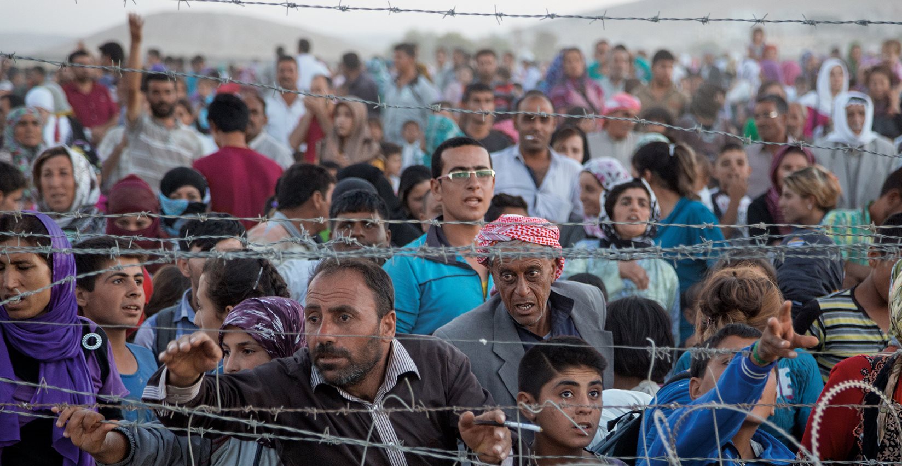
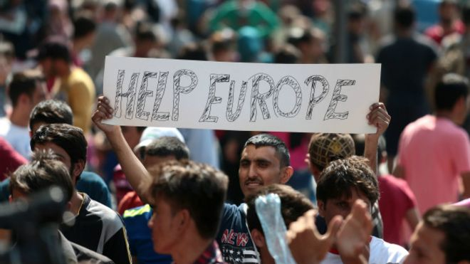
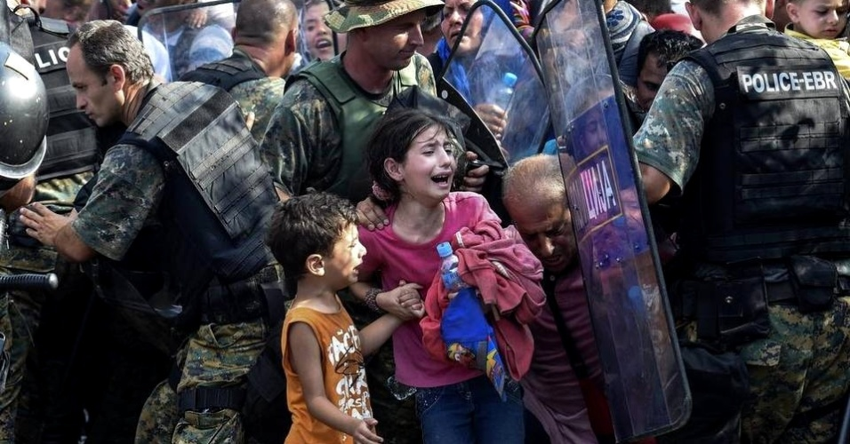
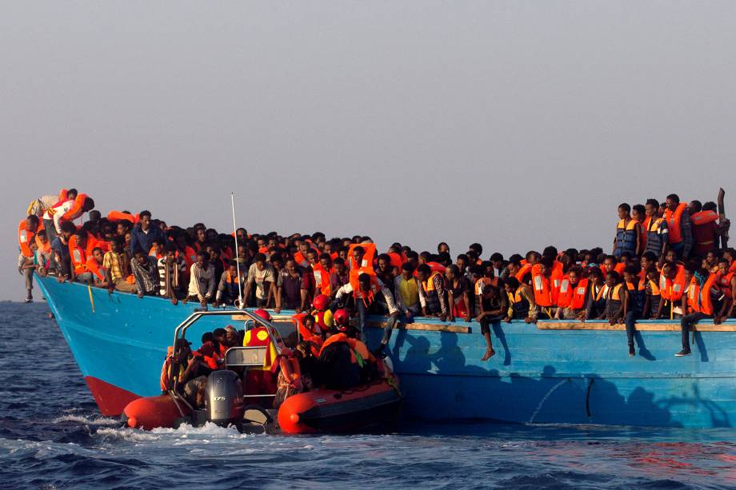

A CRISE HUMANITÁRIA DOS REFUGIADOS

Os refugiados são um grupo específico de imigrantes e têm essa denominação por conta de uma convenção feita em
1951
que trouxe regulamentação aos diferentes tipos de imigrantes.
Refugiado é uma pessoa que sai de seu país por conta de
“fundados temores de perseguição por motivos de raça, religião, nacionalidade, grupo social ou opiniões
políticas”, em
situações nas quais “não possa ou não queira regressar”.
A ONU considera esta a pior crise humanitária do século. Em 2015, o grupo de pessoas que se deslocou de seus
países
fugindo de perseguições políticas e guerras chegou a 65,3 milhões – não em trânsito no momento, mas que passaram
por
essa situação desde que esses números são compilados. O número registrou alta de 9,7% na comparação com 2014,
depois de
uma estabilidade entre 1996 e 2011. A origem da maior parte dos refugiados é a África ou o Oriente Médio. Eles
fogem por
conta de conflitos internos, guerras, perseguições políticas, ações de grupos terroristas e violência aos
direitos
humanos. Metade do fluxo anual de refugiados são sírios, devido à fuga da guerra civil em que o país está desde
2011.
ROTAS TRAÇADAS DURANTE A CRISE DOS REFUGIADOS

Devido a este panorama que se construiu nos últimos anos, principalmente em decorrência da Primavera Árabe,
vários
países ao redor do mundo, principalmente na Europa e na Ásia, têm se preparado para abrigar refugiados. A
prioridade é
diminuir o sofrimento dessas populações e proporcionar auxílio adequado quando eles imigram para tal país.
Os países que mais servem como porta de entrada de refugiados na Europa são Grécia e Itália, ambos
adentráveis pelo Mar
Egeu e Mediterrâneo, respectivamente. Para fazer essa travessia, os refugiados se colocam em alto risco,
tamanho o
desespero de sair de seus países.
Para a Europa, as travessias são normalmente feitas em embarcações de estrutura precária e com preços
superinflados.
Alguns refugiados vendem todos os seus bens e utilizam todo o dinheiro para pagar pela viagem. Segundo a
Organização
Internacional para as Migrações, morreram ou desapareceram 3.771 pessoas nessas travessias no ano de 2015.
Só na
primeira semana de 2016, 409 pessoas morreram nessa mesma situação.
Apesar de a crise dos refugiados ter atingido a Europa com força neste ano, a maior parte das pessoas que
fugiram da
guerra na Síria dirigiu-se principalmente para cinco países do Oriente Médio: *Turquia, Líbano, Jordânia,
Iraque e
Egito. Estes receberam pelo menos 4,3 milhões de pessoas desde o início da crise. Essas nações concentram
95% dos
refugiados* sírios e demandam muito mais assistência dos serviços públicos do que em países europeus –
apesar de, nesse
continente, a discussão sobre receber ou não os refugiados causar muito mais polêmica e hostilidade do que
no Oriente
Médio.
Por serem países mais próximos à Síria, os países árabes são os principais destinos de populações
refugiadas. Porém,
eles têm pouca ou nenhuma estrutura para receber tantas pessoas num intervalo tão curto de tempo. Há
dificuldades em
conceder quesitos básicos, como alimentação, educação para as crianças e abrigo. Por esse motivo, alguns
desses Estados
até impuseram regras para receber refugiados. Conheça a situação dos principais destinos de refugiados:
Líbano: O total de sírios refugiados no Líbano superou 1 milhão de pessoas, o que equivale a 25% da
população do país. Por esse
motivo, entraram em vigor em 2015 novas exigências para os estrangeiros que chegam, como pagamento de uma
taxa para
obtenção de autorização de permanência – válida por no máximo um ano.
Jordânia: Segundo o rei Abdullah Ibn Al-Hussein, a Jordânia está “em ponto de ebulição”, já que os
sírios refugiados equivalem a
20% da população jordaniana, e o país não tem condições de assegurar serviços públicos aos que chegam.
Turquia: A Turquia tornou-se o principal destino dos refugiados – mais de 2 milhões de sírios
cruzaram a fronteira entre os dois
países. Por causa da grande demanda, disponibiliza mais de 20 campos de refugiados, mas os abrigos são
insuficientes
para atender a todos os migrantes sírios, e muitos deles estão sem nenhuma assistência.
Europa: A situação da Turquia preocupa a União Europeia (UE), pois a maioria dos refugiados que
chega ao país tem como destino
final nações europeias como Alemanha e Áustria. Por isso, os líderes da UE fecharam um acordo em novembro
com a Turquia
para o país melhorar as condições dos abrigos e ampliar a permissão de trabalho aos sírios.
SÍRIA

Mais de 250 mil pessoas morreram na Síria desde 2011, ano em que estourou uma guerra civil no país,
e, dentro desse
número, estão mais de 12,5 mil crianças. Em 2015, a guerra completou quatro anos de conflitos entre
tropas leais ao
regime, vários grupos rebeldes, forças curdas e organizações jihadistas, entre elas, o Estado
Islâmico. Estimativas da
ONU apontam que mais de 7,5 milhões de sírios abandonaram suas residências dentro do país e quase
60% da população vive
na pobreza. Os trágicos números refletem na alta taxa de emigração do país – seriam 4 milhões de
refugiados sírios, a
maior população de refugiados do mundo. O principal destino dos sírios são a Turquia, que já recebeu
mais de 1,8 milhão
de refugiados desde o início da guerra civil na Síria, Iraque, Jordânia, Egito e Líbano. Um
relatório da ONU aponta que,
até o início de novembro, mais de 390 mil pessoas saíram da Síria com destino à costa europeia.
Refugiados curdos da
Síria passam atravessam a fronteira com a Turquia, perto da cidade de Kobani.
AFEGANISTÃO

O país foi invadido em 2001 pelos Estados Unidos, logo após o ataque às Torres Gemêas em 11 de
setembro daquele ano.
Osama bin Laden, líder da rede Al-Qaeda, assumiu a autoria dos atentados e se refugiava no
país. Mas, antes disso, o
Afeganistão já estava dominado pelo Talibã, grupo militante radical. Expulso do poder, o
Talibã lutou constantemente ao
longo dos anos contra as tropas americanas. Desde 2001, mais de 150 mil pessoas morreram no
Afeganistão e no Paquistão.
Dados da ONU, indicam que, juntamente com a Síria e a Somália, o Afeganistão somou 7,6 milhões
dos refugiados de 2014.
Os refugiados afegãos estão presentes em mais de 80 países, mas um relatório do Alto
Comissariado das Nações Unidas para
os Refugiados (Acnur) aponta que somente dois deles concentram 96% dessa população: Irã e
Paquistão. Migrantes sírios
passam por barreira de arame farpado tentando adentrar o território húngaro na fronteira
Sérvia-Hungria, enquanto
policiais húngaros observam ao fundo, perto de Roszke, Hungria. O país iniciou a construção de
uma cerca de 175 km na
região.
LÍBIA

Em 2011, o levante popular conhecido como "Primavera Árabe" depôs o ditador Muammar
Kadhafi, que estava no controle do
governo líbio há 42 anos. Desde então, o país vive uma crise política, com dois
Parlamentos e dois governos rivais. O
governo reconhecido pela comunidade internacional tem sede em Tobruk, no leste do país.
Aproveitando-se da instabilidade
na Líbia, o Estado Islâmico, que se apoderou de vastos territórios na Síria e no Iraque,
posicionou-se ano passado na
Líbia, onde controla sobretudo trechos da região de Syrte, a leste de Trípoli. O grupo
extremista já assumiu autoria em
uma série de ataques e abusos, incluindo a decapitação de cristãos e um atentado contra
um hotel na capital Trípoli.
Refugiados dos conflitos cruzam o Mar Mediterrâneo em direção à Itália, usando o país
como uma ponte para chegar a
outros destinos da Europa. O governo italiano já resgatou centenas de imigrantes do
norte da África neste ano.
Fontes:
http://g1.globo.com/mundo/noticia/2015/08/entenda-situacao-de-paises-de-onde-saem-milhares-de-imigrantes-europa.html
https://conteudo.imguol.com.br/c/noticias/18/2015/08/26/21ago2015---criancas-choram-assustadas-na-fronteira-da-grecia-com-a-macedonia-1440624102533_956x500.jpg
https://abrilveja.files.wordpress.com/2016/08/imagens-do-dia-refugiados-mediterraneo-20160829-002.jpg?quality=70&strip=all&w=920
http://ichef-1.bbci.co.uk/news/ws/660/amz/worldservice/live/assets/images/2015/09/04/150904084602_refugees_624x351_afp_nocredit.jpg
http://www.abc.net.au/news/image/6549628-3x2-340x227.jpg
https://cdn-images-1.medium.com/max/1200/1*fJjMkjBAaHTpqjKBdLl9-g.jpeg
http://www.politize.com.br/crise-dos-refugiados/
Autores: Vallery Victória C. Nascimento e Vivian de Paula Camargo.